Feedback experience for Atlanta Symphony Orchestra
SUMMARY
This project outlines the journey of designing an end-to-end service experience for Atlanta Symphony Orchestra (ASO) to gather valuable community audience feedback in an integrated, low-cost and non-intrusive manner. We introduced a streamlined process, various digital touch-points as well as their non-digital alternatives aligned to integrate well with ASO’s current infrastructure.
Background
ASO is a nationally acclaimed, award winning orchestra committed to building foundations of artistic integrity. One of the ways they work towards this is through their non-profit Musicians in Community (MIC) program that exposes underserved and underrepresented groups to classical music through free concerts, lecture demonstrations and workshops.
• Problem definition & scoping • Needs, constraints, value mapping • Interaction Design• User journey mapping• Introduced credit rewards systems
• Designed & led stakeholder need finding workshop• Analyzed the audience survey• Conducted stakeholder interviews
Project Liaison
• Managed stakeholdercommunication, tracked project progress and led documentation
PROBLEM
MIC representatives are currently looking to gather audience’s feedback for their free, community concerts.
Manual efforts
Lack of a consistent process
Resource constraints
MIC representatives currently do not have a consistent process to gather audience feedback
Sometimes, after the concert, organizers talk to some audience members to learn about theirexperience; other times theyleverage a short in-person survey for the same.
Being the non-profit arm of ASO, MIC team often works under tight constraints on their resources (monetary, technology and people)
Impact
Audience dissatisfaction, Loss of patrons
Inability to demonstrate effectiveness of programs
Loss of donors and financial implications
Lack of feedback mechanism leads to gap between what audience expects and what ASO delivers, which further leads to audience dissatisfaction and loss of patrons
MIC depends on sponsorship and donations to drive the community engagements. The lack of numbers bleeds into these donations and thus can have serious financial implications for the team.
MIC team is unable to show “numbers” that demonstrate its effectiveness towards its goals of widening ASO’s reach to underserved communities of Atlanta
To summarize the problem statement:
ASO gather valuable feedback from the participants of the MIC program in a low- cost, integrated manner without being intrusive to audience’s experience
How might…
so that they can…
demonstrate their effectiveness in generating community engagement and identify opportunities to further it.
USERS & STAKEHOLDERS
Stakeholder mapping
Secondary stakeholders
Primary Users
Primary stakeholders
• ASO• MIC team• Donors
Performers
Audience
Experience
Experience
• Low-cost • Integrated
Non-intrusive
Primary Task
Primary Task
• Provide feedback • Engage better
Gather valuable feedback
Value
• Demonstrateeffectiveness of MIC initiatives• Get community “voice”• Quantifiable performance
Primary Users
Audience members
30-50 yo
60+ yo
15-25 yo
Melissa
Josh
Kalyn
43, Accounting
64, Retired
21, Student
“I saw this event on Facebook and it seems like a good way to spend time with my family this weekend. I go to classical concerts a few times a year.”
“I go to classical music concerts every few months with my wife. I get concert news directly from ASO and call them to get the tickets. I expect a good, well-organized show from reputable performers.”
“I came to the concert because my friend invited me to, and it’s free so we got the tickets online. I’m alright with classical music; I only come to see these performances every year or so.”
• Mainly women• Attended few times a year• Heard about the concerts fromother people. • Mostly attended concerts with their family.• Mostly bought their ticketsonline
• Mostly retired individuals• High interest in classical music• Frequent concert attendees • Performers’ reputation played an important role • Less tech-savvy and mostly buys tickets in-person or on phone.
• Mainly students • Conscious of cost • Concerts are leisurely activity • Not concerned by performers’ reputation • Mostly booked tickets online • Always on the lookout for free concerts
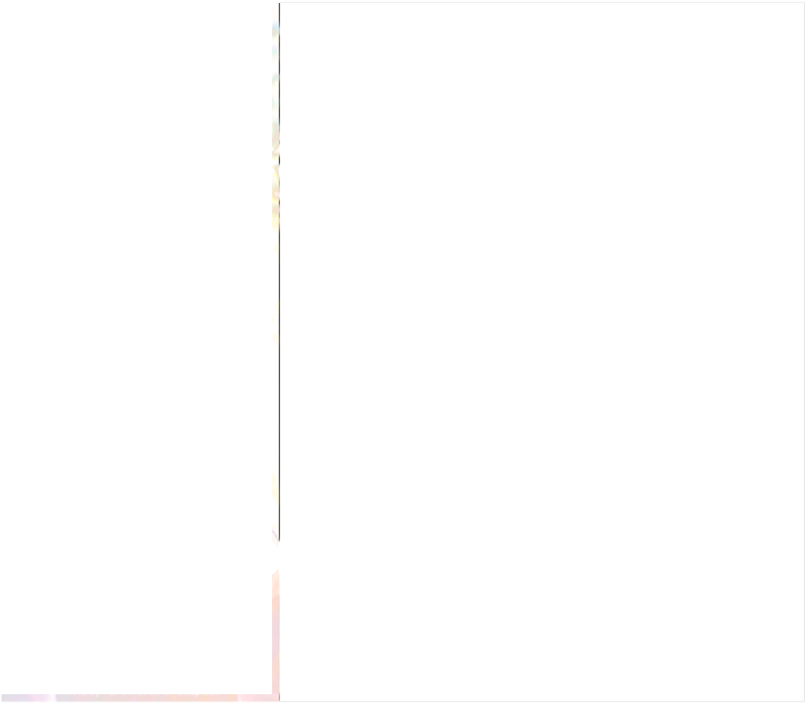
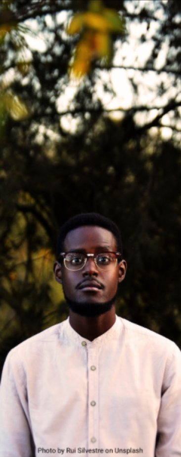
Meet Troy, an audience member (Persona)
Troy Williams (Audience Member)
Demographics
Gender: Male Age: 24 Job Title: Student
Goals
• Visiting music concerts • Taking pictures • Buying Merchandise
Motivations to attend concerts
• Finding new musicians • Gathering with Family and Friends • Take mind off things • Recreation
Pain Points
• Not being able to find parking • Unavailability of Food • Long queues and huge wait times
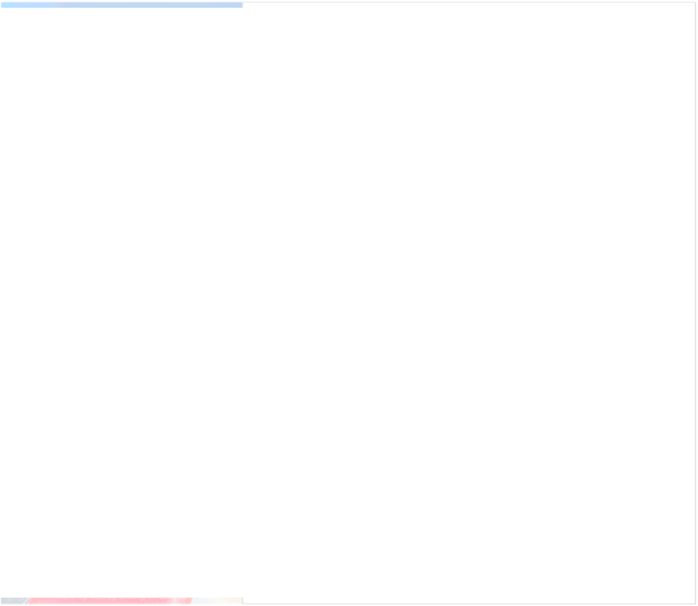
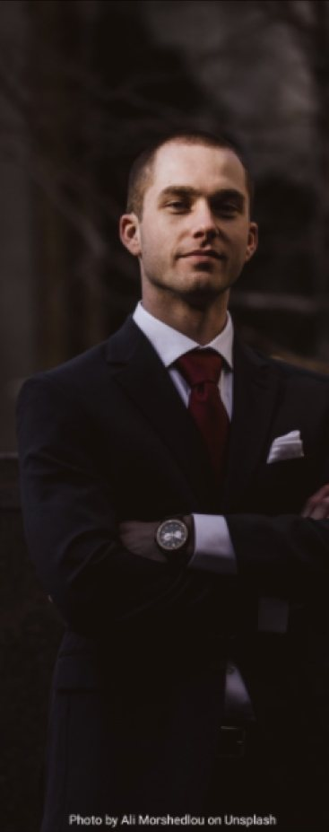
Primary Stakeholders
MIC team (ASO)
Donors
Alison Chen (ASO Representative)
Trent Baylor (Donor)
Demographics
Demographics
Gender: Female Age: 32 Job Title: Development Manager
Gender: Male Age: 39 Job Title: Investment Banker
Goals
Goals
• Provide impactful concerts for audiences • Gather audience feedback • Get funding
• Organize Social Campaigns • Fund projects that support my cause • Communicate with the ASO to facilitate the grant process
Motivations to organize concerts
Motivations to organize concerts
• Enrich community experiences • Introduce audiences to Classical Music • Improve Future Concerts
• Enrich community experiences • Make a difference for people of my community • Improve Future Concerts
Pain Points
Gain Points
• Slow process of feedback data collection • Communication between siloed departments within the ASO
• My organization gets exposure through ASO events • My money is used effectively to support my cause
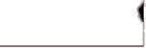
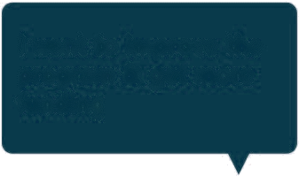
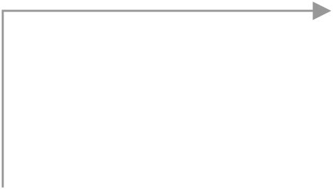
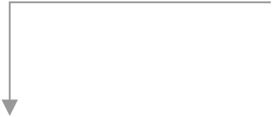
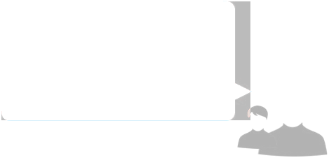
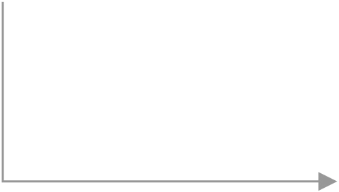
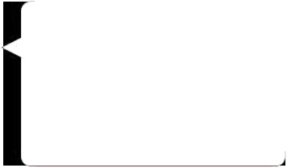
Ecosystem Map (High-level)
I want to improve the program & get more funding
I want deeper feedback & more data but we’re short-staffed.
I want to support a cause I care about.
Feedback, impact information, future customers
Access to classical music
Donors
MIC team (ASO)
I want to see a good show & have a good time.
I want to make sure my money is put to good use.
Audience
I want to introduce classical music to underserved communities
Traditional surveys require too much from me and I don’t usually really care about it.
I want to get feedback about the show and make sure that collaborating w/ ASO was worthwhile
I have to wait in line for some time before getting inside the hall.
Performers
Current User Journey
The current journey of going to a concert is below. To identify opportunities of intervention, we broke the journey down into 3 main sections
Current Journey, broken down into stages
Learning about the event
Arrive, Check-in
Show continues
Preparing to come
Receive program notes
Show starts
Get into hall, pick seat
End show
After show
Intermission
During concert
After concert
Before concert
PROCESS OVERVIEW
Design goals
Based on our research and analysis, we identified the following goals for our end solution. As we navigated through various iterations, these metrics/goals served as the north star for the team.
1
2
3
4
5
6
Accessibility
Ensuring data quality
Higher response rate from audience
Increase audience satisfaction
Technical Feasibility
Ease of data processing
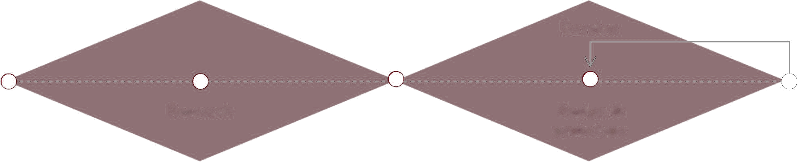
Process Overview
This is an overview of the double-diamond process we took:
Develop
Define
Deliver
Discover
Problem definition
Design & prototype
Research
Opportunity activation
Test
InterviewsSurveysStakeholderworkshops Empathy Maps Persona User Journey (current)
Ecosystem mapping Needs-Constraints-Value 10 types of innovation Business Model Canvas
Experience metrics Process alternatives User Journey (Future) Touchpoint mapping Storyboarding Low, High-fi prototypes Service Blueprint Branding & Visual Design
Remote Usability Testing Stakeholder Walkthrough
DESIGN EXPLORATIONS
The team designed a service experience to help ASO gather feedback for its community concerts effectively. This experience was:
Accessible
Low cost
Well-Integrated
End-to-End
Design Themes
Providing
Multiple small
Quantifiable
1
2
3
Analyzing the current journey, along with insights from research led us to develop main themes that’ll be crucial to designing the intervention journey.
Incentives
surveys instead of one big survey
nature of data/ insights
Engaging ways of collecting information
Providing ways for
4
5
ASO to follow-up
for deeper conversations
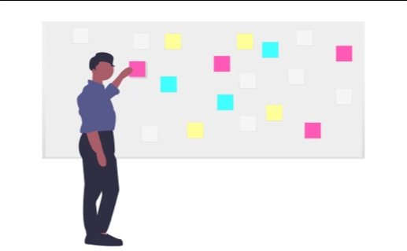
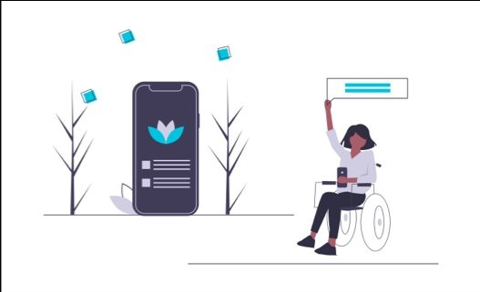
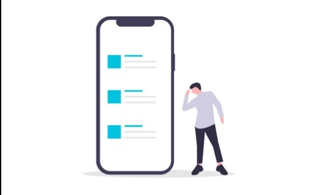
Ideation - 3 alternative journeys
Analyzing the current journey, along with insights from research led us to develop main themes that’ll be crucial to designing the intervention journey.
1
2
3
Physical voting + Sticky feedback board
QR Code + In-App Survey
Live voting + Visualization session
Within the concert, people digitally vote and their feedback is visualized live foreveryone to see.
Audience puts token “votes” in physical voting boxes and posts their feedback using colorful stickies on a giant board. ASO members collect and analyze them later
Audience uses QR code to fill out a brief survey. ASO provides incentive through redeemable credits.
Stakeholder’s feedback
Minimal effort, very effective. It might need a back-up for audience members who are not technologically savvy.
A lot of resources and manual effort required. ASO’s MIC team is not very well staffed.
Appealing to stakeholders, but may not be technically feasible. Also, concerned about the kind of responses people may provide in a live session.
Final Concept
Based on stakeholders’ feedback, our final concept had following features:
Providing incentives
Digital touchpoints
Multiple small
Leveraged QR code + Digital Survey, but
Surveys were
through ASO Credits
surveys instead of one big survey
integrated with ASO’s ticketing platform
integrated with user journey
introducing paper
that can be redeemed at ASO
surveys too for the
older population
Here is the final concept as user journey:
During Concert
Intermission
After Concert
Incentives
Reservation
Check-in
ASO to reach out post survey
Collect basicdemographicinformation along with reservationprocess
Reminder for survey and incentives
Collect information on attendance frequency, outreach
Users leverage ASO credits for future interactions
Provide details for livefeedback, QR code, postconcert survey and incentives in program notes
Users scan the QR codeto fill a survey digitally.Alternative paper surveys made available for others
Post-concertin-depth phone interviewwith those who volunteered
Text message as reference for how many credits they received
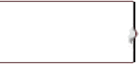
Touchpoint overview
1
2
3
4
5
Program Book
Paper Survey
Back-End System
Ticketmaster
Mobile Web + SMS
For ASO staff to manage the surveys & display the results.
For advertising the ASO Credits program
To cater to the preferences of some audience groups.
For presenting the booking-time demographic survey.
For the rest of the surveys and the ASO Credit system.
AUDIENCE EXPERIENCE DESIGN
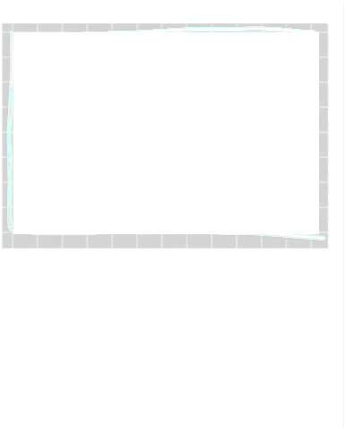
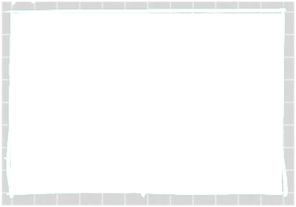
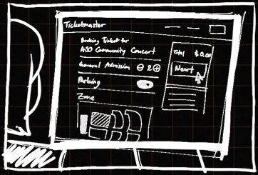
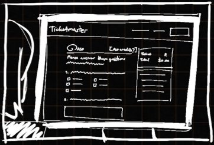
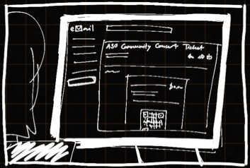
User Scenarios - Audience
Scenario 1: Reserving Tickets online
Kalyn is a regular ASO concert attendee. She is always on the lookout for events and because she always wants to ensure her place, she would make a reservation, even when tickets are free.
Receive ticket in the email
Fill out the ticket details (no. of tickets, session, zone, etc.)
Fill-out pre-concert demographic details like age, gender, location, etc.
Go to online ticket retail site, look at concert details decide to book
Receive ASO Credits notification through email / SMS
Please click on the prototype to interact with it
Scenario 2: Arriving at concert & check-in
Kalyn comes to the concert and checks in. Then, as she is entering the hall, she receives program notes and ASO representative informs her about the second part of survey in the notes. Excited about the credits, she scans the QR code and fills up the shortsurvey.
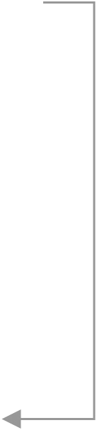
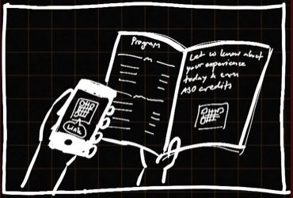
Kalyn arrives at the concert hall & checks-in
She receives program notes & information about ASO credits
Kalyn scans the QR code, gets to the survey, and fills it out
Once submitted, she receives the ASO credits
Please click on the prototype to interact with it
Scenario 3: Interactive session
During the concert, there will be an interactive session for patrons to participate with their phones by scanning a QR code in their program notes. The interactive prompt will be based on the theme of the concert. Patrons’ responses will be shown on the screen on the stage. A short survey will follow the interactive prompt. Once completed, the patron will earn ASO Credits
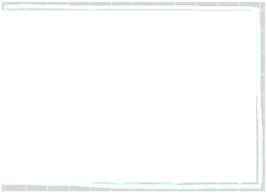
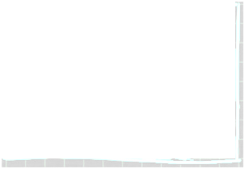
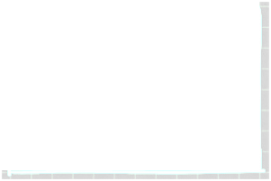
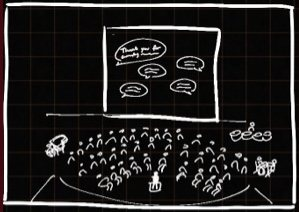
All responses are displayed; host talks through them
Patrons fill feedback inputs and answers other questions
Host introduces feedback session and show the QR code
Patrons scan the code & enters interactive experience
Patrons receive the ASO credits on their phones
Please click on the prototype to interact with it
Scenario 4: Post-Concert survey
After the concert, the host reminds the audience once again about the survey and the incentives. Kalyn scans the QR code once more, completes the remaining survey and receives more credits.
Patrons can use the ASO Credits they have earned to redeem ticket discounts or gifts from the ASO Store. When purchasing an item, the patron will get a promo code that will be used for online orders or a barcode for in-store purchases.
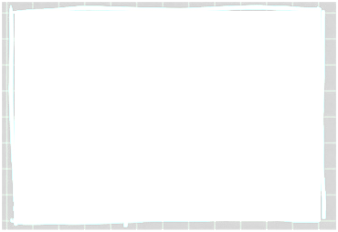
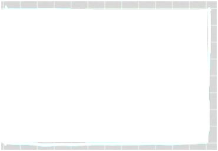
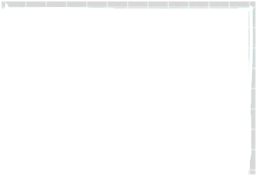
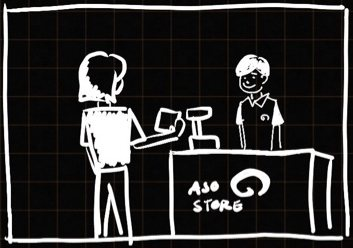
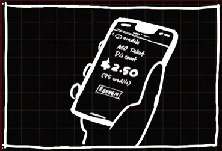
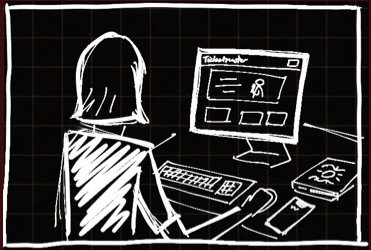
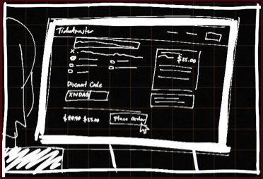
She goes to the ASO store
She redeems the credits to buy her favorite items
Kalyn checks her ASO credit profile to see her credits
Kalyn applies credit when booking her next ticket
Kalyn receives a discount on her next booking
She decides to redeem her credits for the next concert
Please click on the prototype to interact with it
STAKEHOLDER EXPERIENCE DESIGN
Scenario 1: Login
concerts and past concerts. Then, they
ASO Employees can log into the dedicated Feedback Platform and view the list of upcoming can edit surveys and view audience responses.
Please click on the prototype to interact with it
Scenario 2: Edit surveys
ASO Employees can log into the dedicated Feedback Platform and view the list of upcoming concerts and past concerts. Then, they can edit surveys and view audience responses.
Please click on the prototype to interact with it
Scenario 3: Viewing Audience Responses
ASO Employees can view detailed audience responses as a report of gathered feedback for each concert.
Please click on the prototype to interact with it
VISUAL LANGUAGE
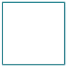
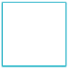
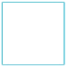
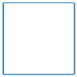
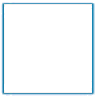
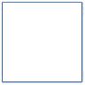
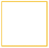
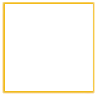
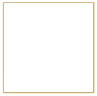
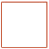
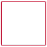
The visual design of the audience-side touchpoints is based on ASO’s current visual language.
Typography
Aa
Aa
Aa
Aa
Aa
Aa
Aa
BLACK
BOLD
LIGHT
REGULAR
HAIRLINE
The quick brown fox jumps over the lazy dog
0 1 2 3 4 5 6 7 8 9
Colors palette
EVALUATION
Remote Usability Testing
The audience mobile experience was tested through remote usability testing sessions to gather feedback and evaluate the design idea.
Participants
Tasks
We covered five touchpoint scenarios throughout a concert experience including:• Booking a ticket• Answering a pre-concert survey• Participating in a live interactive session• Answering a post-concert survey• Redeeming ASO Credits
6 Participants 4 Males, 2 Females 4 in their 20s, 1 in their 30s, 1 in their 60sExperienced with classical music concert. Onehad given feedback to a concert before.
Results
4.8
4.2
2.4
2.3
/5
/5
/5
/5
Ease of Use
No. of surveys that participants think they will fill out
Intrusiveness
Likeliness to fill out at least one survey
What worked
Improvements
• Some thought the tech-powered in-concert session was too disruptive for a classical music concert that feels “analog” to some.• Some aspects can be more streamlined e.g. pre-filling/saving phone number.• Possible survey fatigue.
• A higher response rate can be expectedcompared to traditional feedback process.• The incentives to answer surveys with the
ASO Credits system.
• The design was very easy and straightforward, it requires very low effort.• In-the-moment pre-concert survey helps fillthe idle waiting gap before the concert• Using a phone to answer the survey is moreconvenient than filling out a paper survey.• No app download required, no accountcreation required.
• The post-concert survey might get the least
response: people will be in a hurry to leave the hall and go back.• The actual value of the ASO credits should beclear for users to decide whether to take the timeto fill the survey.• Buying more ASO Credits should be an option.
Remote Stakeholder Feedback
We showed our designs to the ASO representative, the community programs manager, to gather feedback from the stakeholder’s side. The stakeholders seemed to be extremely enthusiastic about the outcome of this project. They expressed their excitement about:
how the ASO Credits incentivizes the system• how ASO back-end system seems to be tightly integrated. • In-concert interactive sessions allows the patrons to connect with ASO at a deeper level.
“Wow! this is awesome!”
“[The back-end system] is verysimilar to the survey platform we’re using so our colleagues will be able to do this. ”
“The patron experience part is my favorite. It really allows them to connect with us beyond the concert, and beyond just an institution.”
“This is way better than our existing system because it also has this credits system integrated.”